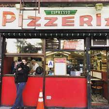
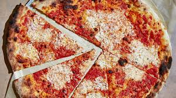
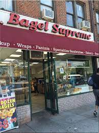
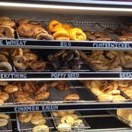
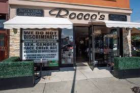
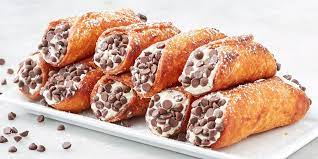

Restaraunts
Espresso Pizza


This place sells some of the best pizza you will get in Brooklyn, and at a good price too.
Bagel Supreme


Want good bagels in bay ridge? Try Bagel Supreme!
Roccos Pasticceria


Roccos is a very nice place to pick up a treat or sit down for any meal.